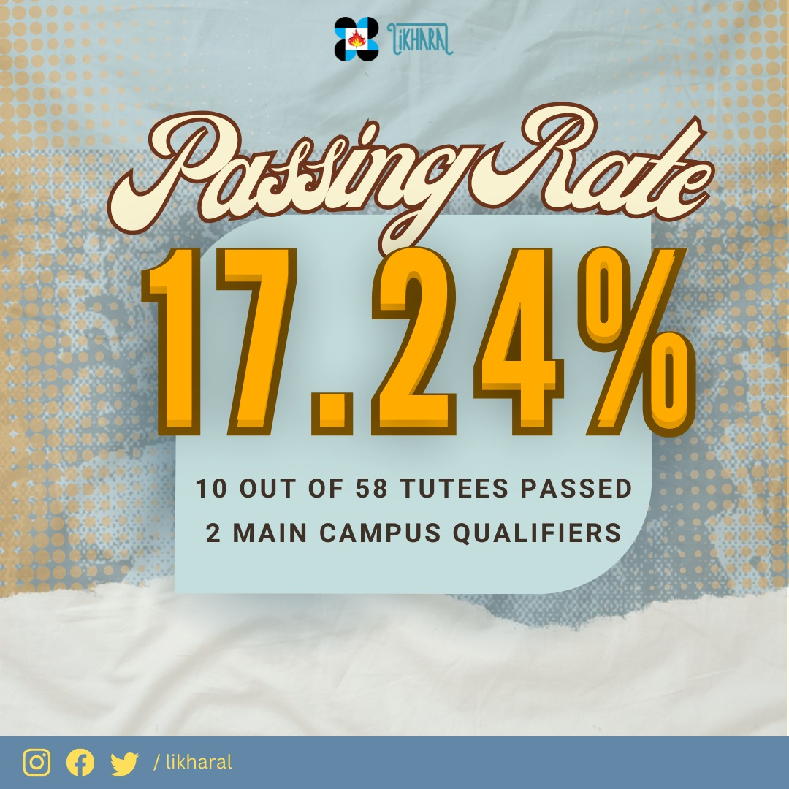
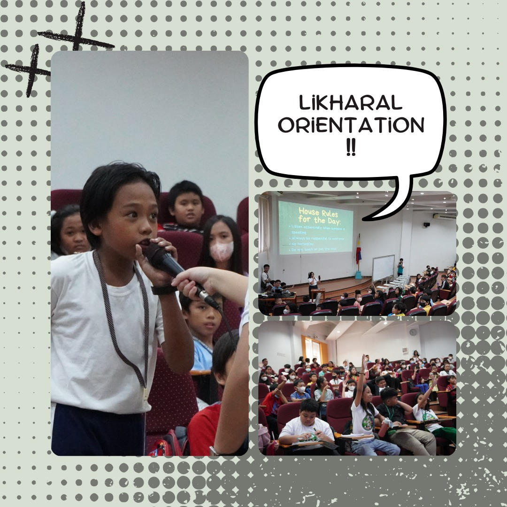
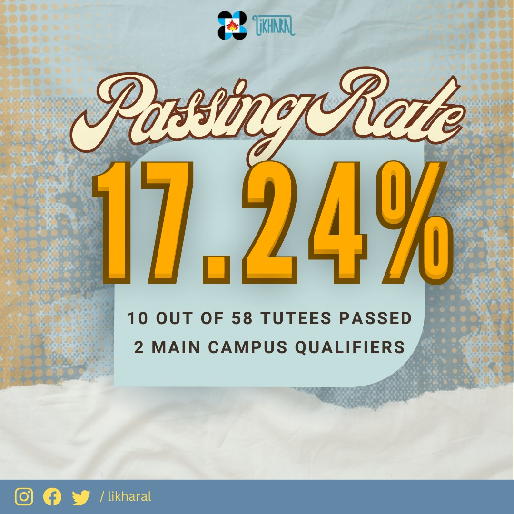
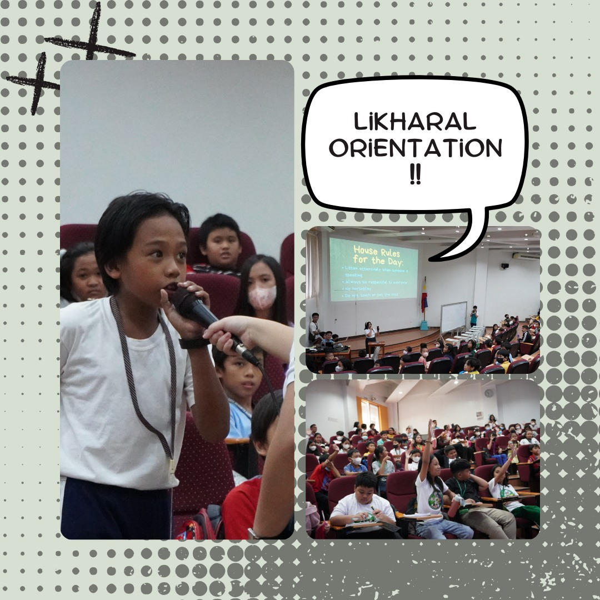

What is Likharal?
We are the Likharal Project, a student-led, educational outreach program from the scholars, for the future Iskolar ng Bayan. Likharal fosters the gifts of intellectually gifted students from selected elementary public schools in Davao City. With the help of Pisay's resources on different subjects such as Science, Mathematics and English, the program focuses on teaching Grade 5 students in preparation for high school.
 


